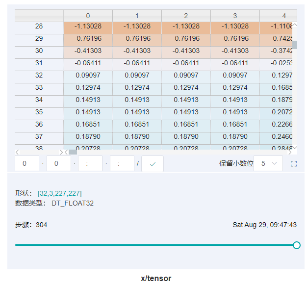

张量可视设计¶

特性背景¶
张量可视能够帮助用户直观查看训练过程中的Tensor值，既支持以直方图的形式呈现Tensor的变化趋势，也支持查看某次step的具体Tensor值。Tensor包括权重值、梯度值、激活值等。
总体设计¶
Tensor可视主要是解析由MindSpore的TensorSummary API记录的Tensor数据生成的Summary文件，并把结果返回给前端展示。
MindSpore Insight解析时会遵循proto文件（Google Protocol Buffer，是一种高效便捷的结构化数据存储方式）来解析Tensor数据，然后把数据缓存起来，在前端查询特定数据时将其返回供前端展示。
Tensor可视支持1-N维的Tensor以表格或直方图的形式展示，对于零维的Tensor，需要通过ScalarSummary来记录并在标量可视中展示。
在表格视图中，可以查询当前缓存中特定step的Tensor数据，后台通过切片操作使得用户单次可以查询任意零到二维的Tensor数据。
在直方图视图中，可以查询当前缓存中所有step的直方图数据。
后端设计¶
张量可视相关的类主要有TensorContainer、Histogram以及TensorProcessor类，其中TensorContainer用于保存Tensor的具体值、维度、数据类型、最大值、最小值、直方图等信息，这里的直方图引用了Histogram的数据。Histogram用于处理直方图相关的信息，包括保存桶个数，归一化缓存中所有step的直方图数据等。TensorProcessor用于处理与Tensor相关的HTTP请求，包括获取当前缓存中特定训练作业，特定tag有多少个step，每个step的Tensor统计信息，特定step的特定维度的Tensor数据（单次支持查询最多某两维的数据）以及特定tag的直方图数据。
前端设计¶

图1：表格展示
图1将用户所记录的张量以表格的形式展示，包含以下功能：
表格中白色方框显示当前展示的是哪个维度下的张量数据，其中冒号
:表示当前维度索引范围，和Python索引含义基本一致，不指定具体索引表示当前维度所有值，2:5表示索引2到5（不包括5）的值，可以在方框输入对应的索引或者含有:的索引范围来查询特定维度的张量数据。拖拽表格下方的空心圆圈可以查询特定步骤的张量数据。

图2：直方图展示
图2将用户所记录的张量以直方图的形式进行展示。
接口设计¶
在张量可视中，主要有文件接口和RESTful API接口，其中文件接口为summary.proto文件，是MindSpore Insight和MindSpore进行数据对接的接口。 RESTful API接口是MindSpore Insight前后端进行数据交互的接口，是内部接口。
文件接口设计¶
summary.proto文件为总入口，其中张量的数据（TensorProto）存放在Summary的Value中，如下所示：
{
message Summary {
message Image {
// Dimensions of the image.
required int32 height = 1;
required int32 width = 2;
...
}
message Histogram {
message bucket{
// Counting number of values fallen in [left, left + width).
// For the rightmost bucket, the range is [left, left + width].
required double left = 1;
required double width = 2;
required int64 count = 3;
}
repeated bucket buckets = 1;
...
}
message Value {
// Tag name for the data.
required string tag = 1;
// Value associated with the tag.
oneof value {
float scalar_value = 3;
Image image = 4;
TensorProto tensor = 8;
Histogram histogram = 9;
}
}
// Set of values for the summary.
repeated Value value = 1;
}
而TensorProto的定义在anf_ir.proto文件中。